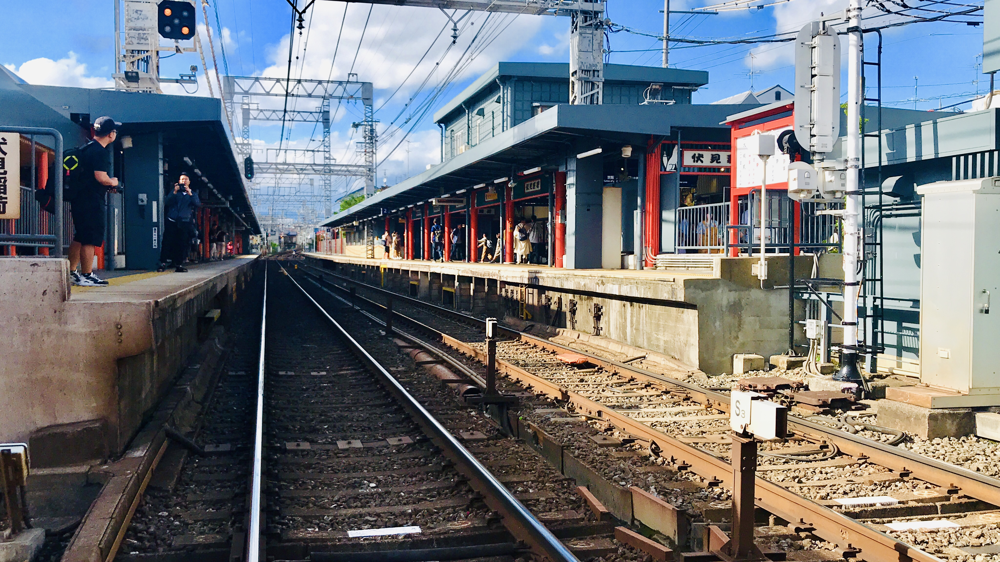
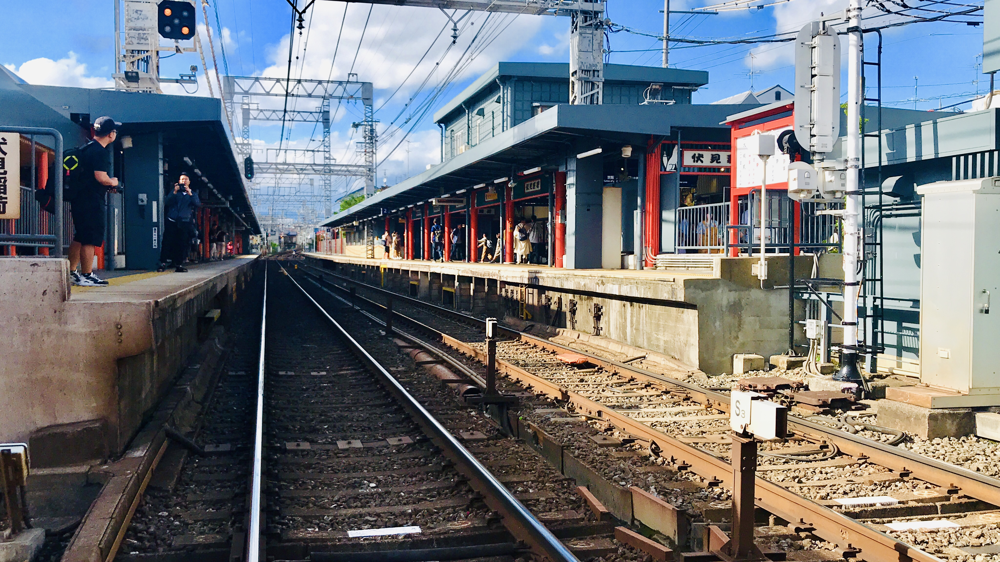

Osaka is Japan's second largest metropolitan area after Tokyo. Located just a half-hour and easy train ride from the ancient capital Kyoto, the lively city of Osaka is best known for its dynamic food and drinking culture, and famously outgoing people.
 


It takes around 1 hour and 10 minutes to get from Kansai international airport to Osaka station via the JR Kansai Airport rapid service trains The Tokaido Shinkansen is a convenient option for getting to Osaka from Tokyo.
The weather in Tokyo depends on the four seasons. Despite the sometimes sudden weather changes from sunny days to rain, many visitors come to Japan in the spring, be careful of sudden thunderstorms and torrential rain during this season.